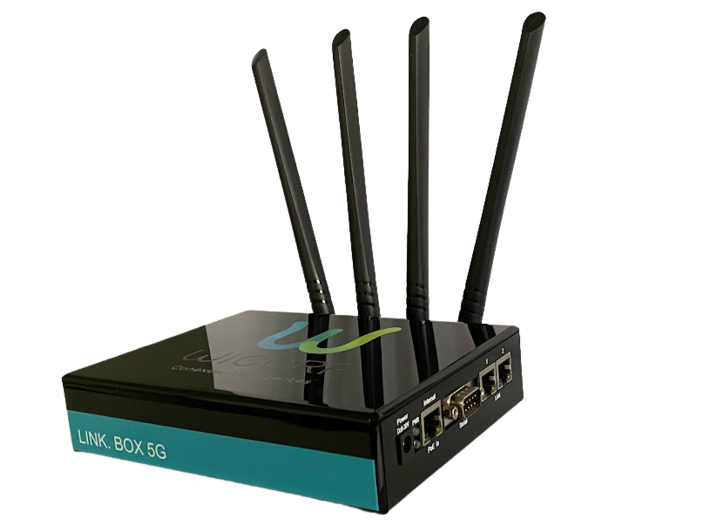
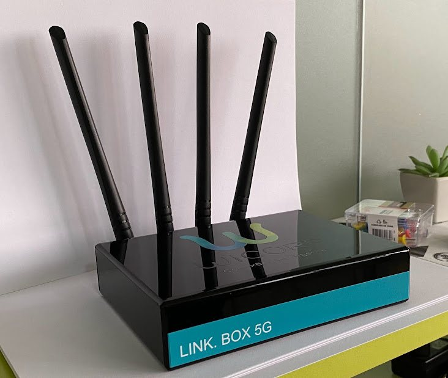

Link.Box: redundância de internet com dois chips 4G/5G
O equipamento que mantém sua operação online quando a conexão principal cai. Funciona sobre o link que você já tem — inclusive de outra operadora.

Não é software. É um aparelho no seu rack.
O Link.Box fica instalado na sua operação, entre o link e a rede interna. Ele monitora a conexão principal continuamente e assume o controle quando ela falha.
- Duas portas LAN e uma porta de internet para o link existente
- Dois chips 4G/5G de operadoras distintas, já embarcados
- Quatro antenas para captação de sinal móvel
- Alimentação por PoE ou fonte, com porta serial para configuração
- Monitorado remotamente pelo nosso NOC, 24 horas por dia
Veja o que acontece quando a fibra cai
Este é o teste que fazemos em campo antes de entregar qualquer projeto. Derrube a conexão principal e acompanhe a comutação para os dois chips 4G/5G — sem ninguém precisar agir.
Demonstração fiel ao comportamento real do equipamento. Em campo, a comutação é validada com teste presencial antes da entrega.
Redundância exige caminhos independentes
Contratar um segundo link ajuda menos do que parece — e este é o comparativo que costuma decidir a conversa.
| Cenário | Link único | Dois links, mesma operadora | Link.Box |
|---|---|---|---|
| Rompimento de fibra na rua | Operação para | Ambos caem juntos | Comuta para o 5G |
| Manutenção da operadora | Operação para | Ambos afetados | Segue online |
| Tempo de indisponibilidade | Horas, até o reparo | Horas, se a falha for na operadora | Cerca de 1 segundo |
| Ação necessária da equipe | Abrir chamado e aguardar | Trocar manualmente | Nenhuma |
| Dependência de fornecedor único | Total | Total | Nenhuma |
Operações que não podem esperar o reparo
- Redes de varejo e farmácias — um PDV sem conexão não emite fiscal nem processa pagamento
- Operações com várias filiais — a unidade isolada perde sistema, telefonia e contato com a matriz
- Indústrias — sistemas de produção e apontamento param junto
- Operações de atendimento — telefonia em nuvem cai junto com a internet
- Empresas com ERP em nuvem — sem link, não há sistema

São mais de 700 equipamentos em operação em redes de varejo, indústrias e instituições de ensino.
O Link.Box protege o link. Não substitui ele.
A redundância entra em ação quando algo falha. No dia a dia, quem sustenta a operação é a conexão principal — e ela precisa ter banda garantida, IP fixo e SLA.
Conhecer o link dedicadoDá para contratar só a redundância
Muitos clientes começam mantendo o link que já têm — de qualquer operadora — e adicionam apenas o Link.Box. Funciona, e é o caminho mais rápido para eliminar o ponto único de falha.
Contratar as duas coisas conosco simplifica o suporte: passa a existir um único responsável pela conexão inteira, em vez de dois fornecedores apontando um para o outro.
Dúvidas de quem está avaliando
O Link.Box funciona com o link que eu já tenho?
Sim — e é assim que a maioria dos clientes começa. O Link.Box trabalha sobre a conexão que já existe no local, inclusive se ela for de outra operadora. Você não precisa trocar de fornecedor de internet para ter redundância.
Preciso contratar link dedicado da Wicorp junto?
Não. São duas soluções independentes. Muitas empresas mantêm o link atual e adicionam apenas a camada de redundância. Contratar as duas com a gente simplifica o suporte, porque passa a existir um único responsável pela conexão inteira — mas não é obrigatório.
Quanto tempo leva a comutação?
Pouco mais de um segundo na maior parte dos casos. O equipamento confirma a falha em três tentativas antes de comutar, para não trocar de rota por causa de uma oscilação passageira. Quando o link principal volta, o tráfego é devolvido automaticamente.
Por que dois chips, e de operadoras diferentes?
Porque redundância exige caminhos independentes. Dois chips da mesma operadora caem juntos quando a torre da região tem problema. Com operadoras distintas, a chance de as duas falharem ao mesmo tempo é muito menor.
Alguém da minha equipe precisa fazer algo quando o link cai?
Não. A comutação é automática e o NOC recebe o alerta. Na maioria dos casos o usuário final nem percebe que houve troca de rota — o que muda é que ninguém abre chamado às pressas.
Serve para operação com várias unidades?
É justamente onde faz mais diferença. Redes de varejo, farmácias e operações distribuídas usam o Link.Box para que uma unidade isolada não pare por falha de uma única operadora.
Descubra onde sua rede está vulnerável
Avaliamos sua estrutura atual e mostramos onde existe ponto único de falha. Sem compromisso.